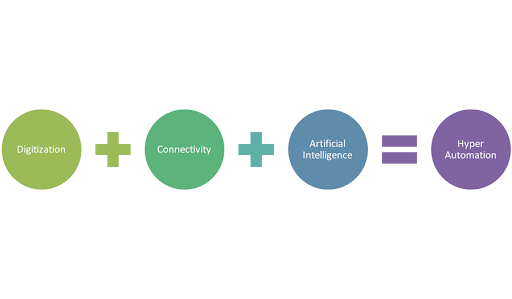
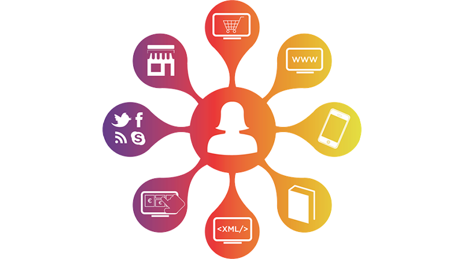
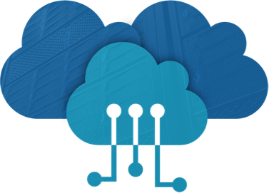

Hyperautomation
Hyperautomation deals with the application of advanced technologies including AI and machine learning to increasingly automate processes and augment humans.”
Hyperautomation brings together several components of process automation, integrating tools and technologies that amplify the ability to automate work. It starts with robotic process automation (RPA) at its core, and expands automation capability with artificial intelligence (AI), process mining, analytics, and other advanced tools.The idea is to automate more and more knowledge work, and engage everyone in an organization to be part of the transformation.
Multiexperience
Multi-experience development platform A multi-experience development platform (MXDP) is a development platform that is used for developing not just mobile and web applications, but also chat, voice, augmented reality and wearable experiences.MXDP simply means the Low Code platform integrating customized environmental experiences. The technology has gained massive traction because it comes with massive digital transformation.The biggest barrier in building a multi-experience development platform is aligning the IT and the business experience. And more than 45% have recognized the lack of the skills of developers to build a fine multi-experience is a major barrier to project completion. “The skills gap with emerging technologies cannot be overstated when discussing inhibitors for scaling up digital initiatives, including the multi-experience development strategy,” says Jason Wong, Vice President, Research, Gartner.According to a recent survey conducted by Gartner, as user application touchpoints increase in frequency, change in modalities and expand in device type, the future of app development is multi-experience. Jason Wong, research VP at Gartner said: “Development platform vendors are expanding their value proposition beyond mobile apps and web development to meet user and industry demands. The result is the emergence of multi-experience development platforms, which are used in developing chat, voice, augmented reality and wearable experiences in support of the digital business.” The survey found that mobile apps are on the rise despite the web browser continued to offer popular application touchpoint. Among enterprises that have developed and deployed at least three different types of applications (other than web apps), the most common ones are mobile apps (91%). Conversational applications are the second-most widely developed type of application type at 73% for voice apps and 60% for chatbots. Cloud-hosted artificial intelligence services are the most widely used technology to support mult-experience application development (61% of respondents), followed by native iOS and Android development (48%) and mobile back-end services (45%). As per the survey respondents, contrary to the perception that mobile apps are in decline, they are in the lead for applications projected to have the most impact on business success by 2020.
Distributed Cloud
Distributed cloud is the distribution of public cloud services to different physical locations, while the operation, governance, updates and evolution of the services are the responsibility of the originating public cloud provider.We consider a system of compute and storage resources geographically distributed over a large number of locations connected via a wide-area network. By distributing the resources, latency to users can be decreased, bandwidth costs reduced and availablility increased. The challenge is to distribute services with varying characteristics among the data centers optimally. Some services are very latency sensitive, others need vast amounts of storage, and yet others are computationally complex but do not require hard deadlines on execution. We propose efficient algorithms for the placement of services to get the maximum benefit from a distributed cloud systems. The algorithms need input on the status of the network, compute resources and data resources, which are matched to application requirements. This demonstration shows how a network-aware cloud can combine all three resource types - computation, storage, and network connectivity - in distributed cloud environments. Our dynamic service placement algorithm monitors the network and data center resources in real-time. Our prototype uses the information gathered to place or migrate services to provide the best user experience for a service.